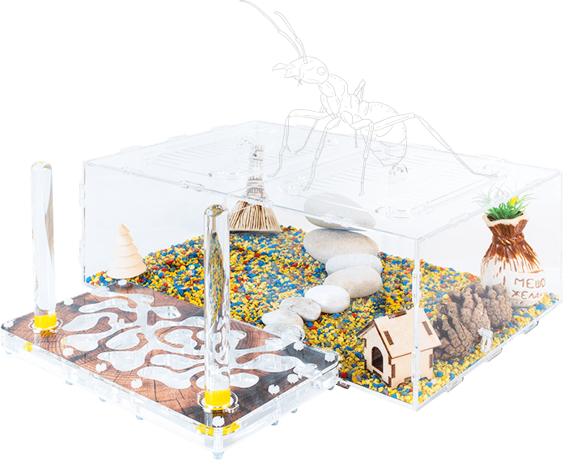

8 800 222 61 87
звонок бесплатный
Муравьиные фермы под ключ
с бесплатной доставкой по РФ.
Увлекательный и полезный подарокдля детей любого возраста

Почему дети и взрослые
любят муравьиные фермы
Уход за муравьями
– прост.
– прост.
Муравьи не вызывают аллергии, не шумят и не пахнут,
при правильном уходе колония живет до 20 лет!
Наблюдать за муравьями –
познавательно и интересно!
Вы знали, что муравьи очень социальные животные с множеством профессий:
рабочие, строители, няньки, уборщики, повара, солдаты и охранники.
Наблюдайте за муравьями и изучайте их уникальный мир!
Фермы положительно
влияют на развитие детей.
Ферма поможет развить у вашего ребенка внимательность,
усидчивость, мелкую моторику и ответственность.

Кормим муравьев
Кормим муравьев
Насыпьте муравьям несколько зерен и смотрите за тем,
как они отнесут их в свое хранилище.
Поим муравьев
Поим муравьев
Менять пробирки с водой надо
всего 1 раз в 14 дней. Вы
можете спокойно уезжать в
отпуск и оставить муравьев
дома!
Меняем гипсовые блоки
Меняем гипсовые блоки
В других фермах со временем гипсовые
элементы изнашиваются и становятся
некрасивыми. В наших фермах вы можете легко
заменить этот элемент всего за 1 минуту.
Легко убираем ферму
Легко убираем ферму
Уход за муравьями очень прост! Весь свой
мусор они сами выносят на специальную
площадку, которую вы можете очистить за
несколько секунд.
Расширяем ферму
Расширяем ферму
Вы хотите ферму побольше? В любой момент
вы можете подключить к этому гнезду другую
ферму и увеличить вашу колонию муравьев в
несколько раз!
Уход за муравьями
очень прост
очень прост
Уход за муравьями очень прост
Муравьи – очень интересные
существа. Вы и сами в этом
убедитесь, когда будете
наблюдать, как они засыпают
семена, ухаживают за
королевой или охраняют свое
жилище.
Строим инфраструктуру
Строим инфраструктуру
Когда семейство муравьев дает пополнение –
просто откройте дополнительные перегородки,
и новая семья «переедет» в свою собственную
квартиру.